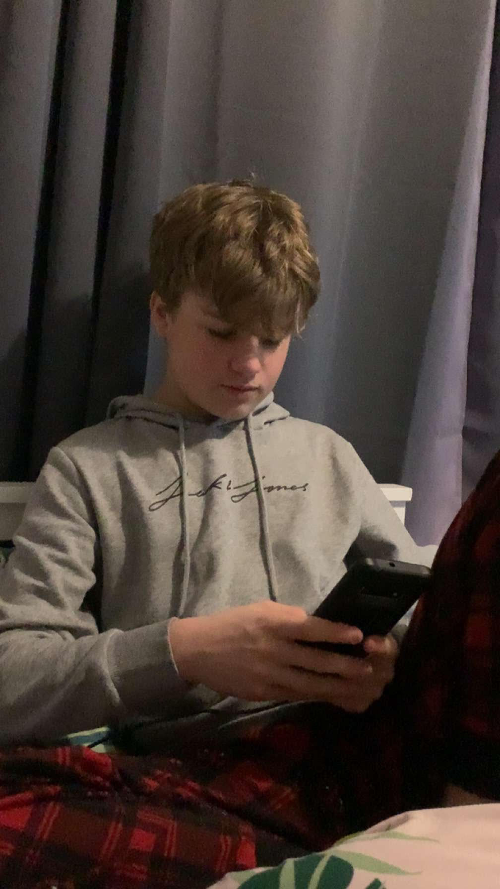

About me:
What software do I code on?
I code on Microsoft Visual Studio Code
Why did I choose to learn to programme?
I chose to learn to programme because I have always had an interest in websites and how they work,
how they are made and what makes a website a website. Along with this, the evergrowing field of computing,
coding and programming is becoming more and more important in our day to day lives. As I progress through
HTML, CSS and JavaScript, I intend to learn to code using Python. My inspiration for learning to code Python
is Boston Dynamics and their work on robotics.
